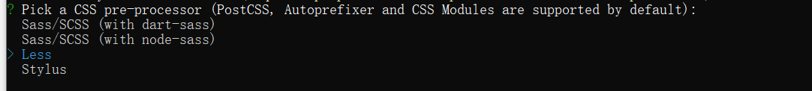
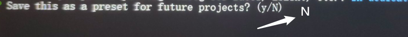
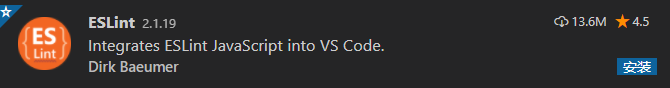

Day01_项目开始和登录
# 今日学习目标
- 搭建项目的结构
- 完成登录部分功能
# 1.项目_技术点(快速)
# 目标
- 了解项目需求
# 项目介绍
- 黑马头条(极客园)移动端是一个IT资讯移动web应用，有着和今日头条类似的资讯浏览体验。
- 主要功能：资讯列表、标签页切换，文章举报，频道管理、文章详情、关注功能、点赞功能、评论功能、搜索功能、登录功能、个人中心、编辑资料、小思同学
- 黑马头条可打包成一款移动APP，后期结合H5+可在Dcloud打包成一款体验较好的手机应用。
- 项目在线浏览地址: http://123.57.109.30:4005/dist/
# 项目包介绍
生产环境的包
| 包名 | 概念 |
|---|---|
| vue | 核心vue |
| vuex | 状态管理插件 |
| vue-router | 路由管理插件 |
| axios | 网络请求插件 |
| vant | 移动组件库 |
| socket.io-client | 即时通讯库 |
| amfe-flexible | flexiblejs适配 |
开发环境的包
| 包名 | 概念 |
|---|---|
| babel | ES语法转换器 |
| less | css预处理器 |
| vue-cli | vue项目脚手架包 |
| postcss | css语法转换器(后处理器) |
| postcss-pxtorem | 把px自动转rem插件(需要配合webpack用) |
打包App
- Hbuilder开发工具内, DCLOUD功能一键打包
# 项目技术点介绍
- vuejs中
- $nextTick使用 (vue更新DOM是异步的)
- 组件通信 (父, 子传递)
- async和await用法
- keep-alive 组件缓存
- vuex
- actions中发ajax请求
- actions的返回值问题
- vue-router
- 懒加载 (对打包以后首页加载速度有提高)
- axios
- 请求和响应拦截器
- 封装请求工具方法 (代码分层)
- vant
- 对组件使用更熟悉
- 掌握使用和查阅文档的能力
- socket.io-client
- http协议复习 (请求报文和响应报文)
- 与ajax区别
- ajax和socket之间的选择
- amfe-flexible
- 移动端rem适配
# 项目预计收获
- 自我学习能力
- 理解项目流程
- 排错解决能力 (有错误, 对代码也要知道为什么)
- 标签结构/样式问题 - 看Elements控制台
- JS逻辑问题 - 学会console打印调试变量值
- 网络问题 - 看network
- 快乐和开心, 总结沉淀经验
- 在完成开发任务后, 建议写博客(不强制)
# 小结
我们要做一个什么东西?
- 移动端的项目, 资讯类的
项目大概用到哪些技术点?
为什么做项目?
巩固技术知识
项目需求和流程(思想)
锻炼写代码和学习能力
锻炼排错能力
# 2.项目_创建
# 目标
- 用@vue/cli包, 创建脚手架项目
# 步骤
创建项目 (建议使用cmd终端)
vue create hmtt采用自定义方式去创建项目
上下箭头切换, 回车确认, 空格选中
? Please pick a preset: Default ([Vue 2] babel, eslint) Default (Vue 3 Preview) ([Vue 3] babel, eslint) > Manually select features手动选择特性
Babel, Router, Vuex, CSS Pre-processors, Linter
? Please pick a preset: Manually select features ? Check the features needed for your project: (*) Choose Vue version (*) Babel ( ) TypeScript ( ) Progressive Web App (PWA) Support (*) Router (*) Vuex >(*) CSS Pre-processors (*) Linter / Formatter ( ) Unit Testing ( ) E2E Testing版本Vue2.x
? Choose a version of Vue.js that you want to start the project with (Use arrow keys) > 2.x 3.x (Preview)路由是否使用history模式：不采用

css 预处理器: 使用less

eslint语法风格：Standard (一定)

检查节点：保存时检查，提交时检查 (提交时可以不选)
存储插件配置位置：单独放在不同的文件中

接下来，它会问你是否要保存前面的设置作为预设方案，以便后续创建其它项目时直接使用。
你可以选择N(不保存)
如果选择Y, 保存, 以后就可以一键完成以上步骤
如果以后不需要的预设名字, 可以找到C:\Users\电脑名字, 下的.vuerc找到预设名字, 删除预设配置项
经过长长的等待，创建完毕, 进入文件夹, 启动项目
# 小结
如何创建项目?
- vue create 项目文件夹名
选择哪种预设?
- 自定义模板
什么叫预设?
- 生成的脚手架项目里都有什么东西
# 3.项目_git存储
# 目标
- git命令巩固
- 项目版本管理
- 创建远程仓库
- 本地仓库推送上去
# 新项目-本地仓库
创建本地仓库
脚手架项目, 默认有个git本地仓库, 可以覆盖它/删除.git文件夹自己创建
git init暂存和提交
git add . git commit -m '提交的说明'注意: 会在本地.git文件夹里, 有一次本地的提交记录
# 新项目-远程仓库
代码保存到远程
- gitee.com网站注册账号并且登录
- gitee.com网站创建仓库

根据网站的命令操作(已有本地仓库)
git remote add origin git仓库地址(自己去网页看) git push -u origin master
只有第一次需要 -u origin master, 以后直接git push
上传成功可以看到这里
如果公司自己git服务器, 么有网页, 需要git log看提交记录

# 以后提交和推送
本地开发代码, 变化后
先本地提交保存(暂不保存到远程仓库上)
git add . git commit -m '提交说明,一定要写清楚,方便以后回滚'要推送到远程的话才执行这句
git push
# 克隆和拉取
如需远程git仓库里代码, 需要克隆或拉取代码下来
第一次克隆下来
- 注意: http/https开头的地址, 需要账号密码才能克隆/推送
- 注意; git@开头的地址, 需要ssh秘钥文件配置好, 才能免账号密码克隆/推送
git clone 远程git仓库地址多人协同开发一个项目, 别人推送了, 以后直接拉取更新即可
如果提示有冲突, 打开代码, 找到对方商量合并冲突
git pull
# 小结
git有什么作用?
可以管理代码的版本(没提交一个功能可以有个记录, 随时可以回退)
本地仓库和远程仓库区别?
本地仓库存在本地文件夹(.git)内记录
远程仓库需要联网才能推送代码上去
# 4.ESLint介绍
# 目标
- 了解ESLint的作用
- 能判断ESLint的错误
# ESLint是什么
ESLint (opens new window) 是一个代码检查工具，用来检查你的代码是否符合指定的规范
- 例如: = 的前后必须有一个空格
- 例如: 函数名后面必须有空格
- 例如: await必须用用在async修饰的函数内
- 例如: ==必须转换成3个等
- ........
# ESLint的好处
在写代码过程中, 检查你代码是否错误, 给你
小黑屋提示ESLint可以约束团队内代码的风格统一
ESLint是法官, Standard是法律
# ESLint的规范
规范文档: http://www.verydoc.net/eslint/00003312.html
规范文档2: https://standardjs.com/rules-zhcn.html
规范文档3: http://eslint.cn/docs/rules/
# ESLint使用
在代码里随便多写几个回车, ESLint会跳出来刀子嘴, 豆腐心的提示你.
在webpack开发服务器终端 / 浏览器 => 小黑屋

eslint 是来帮助你的。心态要好，有错，就改。
把第4步规则名字, 复制到上面规范里查找违反了什么规则 / 根据第三步提示修改
# 小结
什么是ESLint?
代码检查工具
为什么要使用ESLint?
规范我们写代码的格式, 看着整洁 / 团队内成员风格统一
ESLint在哪里生效?
webpack开发服务器+ESLint配置检查
# 5.ESLint在VSCode中使用
# 目标
- 每次运行后, 才看到ESLint报错, 很累吧?
- 边写代码, VSCode就提示ESLint规则?
# ESLint插件
下载这个插件到vscode中

==2. 非常非常非常重要==
一定要把脚手架工程, 作为vscode根目录, 因为eslint要使用配置文件.eslintrc
一定要配置插件监测的时机, 修改ESLint插件配置

不用管别的, 把红框的放在{}内即可
"eslint.run": "onType", "editor.codeActionsOnSave": { "source.fixAll.eslint": true }
更多的规则可以参考这里: https://www.cnblogs.com/jiaoshou/p/12218642.html
# ESLint插件修复
- 随便文件里多敲击几个回车, vscode报错提示, 证明ESLint插件开始工作
- ctrl + s 报错下是否能自动修复部分问题, 可以, 证明ESLint插件开始工作
==如果不工作, 看下面扩展资料==
# 自定义规则
在.eslintrc.js文件中, 可以调整规则(团队内可以自定义自己一套)

rules是一个对象，以键值对的格式来约定规则：
- 键名是规则名
- 值是这条规则的具体说明。最常见的有off,warn,error
# 小结
ESLint在哪2个地方分别检查代码?
VSCode里工作和webpack开发服务器也检查
ESLint插件有什么功能?
VSCode编码时, 提示, 保存还可以自动修复大部分问题
# 6.项目_目录结构
# 目标
- 认识工作目录
- 默认生成目录不满足我们开发结构
# 删除默认配置
清空src/views/App.vue中的默认内容, 留个框
<template> <div> 黑马头条移动版 </div> </template>删除默认生成的文件
- components/HelloWorld.vue
- views/Home.vue
- views/About.vue
修改一下路由配置 - 留下框
- src/router/index.js
import Vue from 'vue' import VueRouter from 'vue-router' Vue.use(VueRouter) const routes = [ // 删除掉 ] const router = new VueRouter({ routes }) export default router
# 新增文件夹
在 src 目录下中补充创建以下目录：
- /api/index.js ： 存储请求函数模块
- /styles: 样式文件模块
- /utils: 工具函数模块
├── node_modules # 安装的包
├── public # 静态资源托管目录
│ ├── favicon.ico
│ └── index.html
└── src # 源码
├── api #请求接口封装模块
└── index.js #封装请求方法
├── assets #资源目录
├── components #组件目录
├── router #路由模块
└── index.js #路由对象
├── store #Vuex容器模块
└── index.js #store对象
├── styles #样式目录
├── utils #工具模块目录
├── views #视图组件目录
├── App.vue #根组件
└── main.js #入口文件
├── .browserslistrc # 浏览器的约定
├── .editorconfig #对本项目要用到编辑器的约定
├── .eslintrc.js #eslint
├── .gitignore # git的忽略设置
├── babel.config.js #babel配置文件
├── package-lock.json #npm相关文件
├── package.json #npm相关文件
└── README.md #项目说明文件
# 小结
api文件夹的作用?
- 统一管理网络请求方法
utils文件夹的作用?
- 定义工具方法的地方
# 7.项目_Vant组件库
# 目标
- 黑马头条项目 - 基于Vant组件库开发
# 移动端组件库
PC端也有独特的组件库, 例如后面学习的element-ui
有赞团队推出的Vant组件库
其他移动端组件库
- vux
- mint
# 引入vant组件库
下载vant组件库
yarn add vant根据文档指引, 配置按需引入
https://vant-contrib.gitee.io/vant/#/zh-CN/quickstart#yin-ru-zu-jian
如果上面打不开用这个地址试试: https://youzan.github.io/vant/#/zh-CN/home
下载插件
yarn add babel-plugin-import -D在babel.config.js-添加如下配置
module.exports = { // ...省略了其他 plugins: [ ['import', { libraryName: 'vant', libraryDirectory: 'es', style: true }, 'vant'] ] };改了src以外的文件, 要重启本地开发服务器
# 小结
vant组件库按需加载是什么意思?
只需要引入某个组件而不是全部, 组件对应样式文件也会自动引入
# 8.项目_移动端适配
# 目标
- 复习适配方案
- 脚手架项目集成postcss翻译css代码
# 适配方案选型
- PC端一般都是1:1用px还原UI设计图, 靠内容撑开高度
- 移动端一般都是rem单位进行适配
# 适配步骤
下载amfe-flexible
根据网页宽度, 设置html的font-size
yarn add amfe-flexible到main.js引入
import "amfe-flexible"下载postcss和postcss-pxtorem@5.1.1
postcss: 后处理css, 编译翻译css代码
postcss-pxtorem: 把css代码里所有px计算转换成rem
yarn add postcss postcss-pxtorem@5.1.1根目录下创建postcss.config.js文件
对postcss进行设置
module.exports = { plugins: { 'postcss-pxtorem': { // 能够把所有元素的px单位转成Rem // rootValue: 转换px的基准值。 // 编码时, 一个元素宽是75px，则换成rem之后就是2rem rootValue: 37.5, propList: ['*'] } } }37.5 是如何得来的?
UI移动端设计图宽度375px, 而flexible.js会/10, 设置html的font-size为37.5
# 小结
移动端适配选择哪种?
rem + flexible.js
flexible.js作用是什么?
js代码里获取网页宽度 / 10设置html的font-size的值(px单位)
代码里px如何自动转换rem?
postcss和postcss-pxtorem插件
# 9.项目_封装axios函数
# 目标
- 基于axios进行二次封装
- 统一配置, 便于管理
# 步骤
下载axios
yarn add axios创建utils/request.js
// 基于 axios 封装的请求模块 import ajax from 'axios' // 新建一个新的axios实例 const axios = ajax.create({ baseURL: 'http://123.57.109.30:8000' // 基地址 }) // 导出自定义函数, 参数对象解构赋值 export default ({ url, method = 'GET', params, data, headers }) => { return axios({ url: url, method: method, params: params, data: data, headers: headers }) // 以后换库, 只需要改这里, 逻辑页面不用动, 保证代码的复用性和独立性(高内聚低耦合) // return $.ajax({ // url: url, // type: method, // data: data, // header: headers // }) }
# 小结
为何要二次封装axios函数?
为了让我们的代码更加灵活, 统一管理
axios.create作用?
创建返回一个新的axios函数对象
# 10.项目_封装接口方法
# 目标
- 统一管理请求的接口
# 步骤
api/index.js定义各种接口方法
请求所有频道数据地址: /v1_0/channels
// 接口方法, 只负责调用一个接口, 返回一个Promise对象
export const allChannelListAPI = () => {
return request({
url: '/v1_0/channels'
})
}
# 测试
在main.js中导入过来, 尝试发起一个请求
import { allChannelListAPI } from '@/api'
async function myFn(){
const res = await allChannelListAPI()
console.log(res) // 后台返回的频道数据
}
myFn();
==测试完, 就删除main.js这段代码, 以后在vue页面使用, 这里只是测试==
# 小结
为何要封装接口方法?
还是为了方便管理
网络请求相关的代码分了几层呢?
任意组件(消费), api/index.js(秘书), utils/request.js(车), 接口服务器(本地/后台-数据提供商)

# 11.项目_try和catch(上午结束)
# 目标
- 如何捕获await错误情况
# 复习
- await用于取代then函数, 等待Promise成功结果提取在原地
- await无法获取Promise失败的结果, 一旦失败Promise错误直接抛出到控制台
# 解决方案
使用JS里内置语法, try+catch
语法:
/*
try {
// 可能会报错的代码(例如await)
} catch (err) {
// try里代码报错, 捕捉到这里执行
}
*/
具体代码
import { allChannelListAPI } from '@/api'
async function myFn () {
try {
const res = await allChannelListAPI()
console.log(res) // 后台返回的频道数据
} catch (err) {
console.error(err)
}
}
myFn()
# 小结
await可以提取错误的结果吗?
如何能捕捉到await后面Promise的错误结果?
使用try+catch块
# 12.登录_页面和路由
# 目标
- 创建登录页面vue文件
- 登录页面路由
# 步骤
src/views/Login/index.vue - 作为登录页面 - 先随意弄写标签显示
<template> <div> <h1>登录页面</h1> </div> </template> <script> export default { name: 'Login' } </script> <style lang="less" scoped> </style>src/router/index.js - 添加登录的路由规则
import Login from '@/views/Login' const routes = [ { path: '/', redirect: '/login' }, { path: '/login', component: Login } ]别忘了路由给挂载点, 在App.vue中
<template> <div> <router-view></router-view> </div> </template> <script> export default { } </script>打开页面测试下, 是否能显示登录页面
# 小结
路由的redirect是什么意思?
切换路由路径的值 - 重新匹配路由
# 13.登录_导航组件
# 目标
根据UI设计图, 铺设登录页面
# vant组件使用
在main.js - 引入Vant组件 - NavBar导航 - 全局注册
import { NavBar } from 'vant' Vue.use(NavBar)在Login/index.vue - 使用头部导航组件
<template> <div> <van-nav-bar title="黑马头条-登录" /> </div> </template>
# 样式修改
运行后, 找到组件, 渲染标签的类名, 直接覆盖样式
class类名覆盖
运行后, 找到组件标签的类名, 编写相同类名覆盖
.van-nav-bar{ background: #007bff; } /* /deep/ 就是把data-v-hash值选择器写到类名的前面 */ /deep/ .van-nav-bar__title{ color: white; }
# 小结
- 为何不直接给组件设置class?
- 因为组件属性虽然是class, 但是也要看组件是否支持才可以
- 如何选中深层标签?
- /deep/ 属性后台选择器
# 14.登录_组件定制
# 目标
- 组件样式修改
- 查阅文档, 定制组件
# 方式1
vant组件配置 - less变量配置
vant定制文档: https://vant-contrib.gitee.io/vant/#/zh-CN/theme
babel.config.js 修改配置
module.exports = { presets: [ '@vue/cli-plugin-babel/preset' ], plugins: [ ['import', { libraryName: 'vant', libraryDirectory: 'es', // 指定样式路径 style: (name) => `${name}/style/less` }, 'vant'] ] }vue.config.js - 修改配置 (让webpack打包时, less变量被覆盖)
module.exports = { css: { loaderOptions: { less: { modifyVars: { // 直接覆盖变量 'nav-bar-background-color': '#007bff', 'nav-bar-title-text-color': 'white', // 或者可以通过 less 文件覆盖（文件路径为绝对路径） // hack: `true; @import "your-less-file-path.less";`, } } } } }一定要重启webpack开发服务器, 然后观察效果
# 方式2
vant组件配置 - less文件
src/styles/cover.less - vant定制less变量统一在这管理
// NavBar导航 @nav-bar-background-color:#007bff; @nav-bar-title-text-color:white;vue.config.js - 注释变量, 放开引入文件路径
// 不要手动写绝对路径, 用代码来动态获取, 绝对地址 const path = require('path') // console.log(__dirname) // 当前文件, 所在文件夹, 的绝对路径 // 盘符:/......../工程名字, 后面自己拼接 src/styles/cover.less module.exports = { css: { loaderOptions: { less: { modifyVars: { // 直接覆盖变量 // 'nav-bar-background-color': '#007bff', // 'nav-bar-title-text-color': 'white', // 或者可以通过 less 文件覆盖（文件路径为绝对路径） hack: `true; @import "${path.resolve(__dirname, 'src/styles/cover.less')}";` } } } } }一定要重启webpack开发服务器, 然后观察效果
# 小结
如何自定义组件样式?
方式1: 运行后找到类名, 覆盖它
方式2: 使用官网文档的配置方式, 覆盖原来默认样式
# 15.登录_表单组件
# 目标
表单组件的使用
表单组件正则校验
# 步骤
引入表单组件, 在main.js中全局注册
import {Form, Field, Button } from 'vant' Vue.use(Form) Vue.use(Field) Vue.use(Button)在Login/index.vue使用组件, 定义变量, 和表单校验
<template> <div> <van-nav-bar title="黑马头条 - 登录" /> <van-form @submit="onSubmit"> <van-field v-model="formLogin.mobile" type="tel" label="手机号" placeholder="请输入手机号" required :rules="[{ required: true, message: '请填写手机号', trigger: 'onChange', pattern: /^1[3456789]\d{9}$/ }]" /> <van-field v-model="formLogin.code" type="password" label="密码" placeholder="请输入密码" required :rules="[{ required: true, message: '请填写密码', trigger: 'onChange', pattern: /^\d{6}$/ }]" /> <div style="margin: 16px;"> <van-button block type="info" native-type="submit">登录</van-button> </div> </van-form> </div> </template> <script> export default { name: 'Login', data () { return { formLogin: { mobile: '13888888888', code: '246810' // 默认只能用246810后台规定了 } } }, methods: { onSubmit () {} } } </script>
# 小结
判断手机号的正则怎么写?
/^11位校验$/
# 16.登录_调用接口
# 目标
- 调用登录接口
# 接口方法
api/index.js - 定义登录接口方法
// 用户 - 登录 export const loginAPI = ({ mobile, code }) => { return request({ url: '/v1_0/authorizations', method: 'POST', data: { mobile, code } }) }在Login/index.vue引入调用
import { loginAPI } from '@/api' async onSubmit () { try { const res = await loginAPI(this.formLogin) const { token, refresh_token } = res.data.data console.log(token); console.log(refresh_token); } catch (err) { console.error(err) } }打开网页登录测试一下, 观察打印和network是否正常
# ESLint规则修改
我们想要使用_方式定义变量名
rules: {
'no-console': process.env.NODE_ENV === 'production' ? 'warn' : 'off',
'no-debugger': process.env.NODE_ENV === 'production' ? 'warn' : 'off',
'camelcase': 'off' // 关闭_定义变量的检查
}
一定要重启vscode和webpack开发服务器才会生效
# 小结
登录流程是什么?
收集表单值
调用接口方法
调用axios发起请求
请求具体url传递参数给后台
拿到返回结果打印/提示
# 17.登录_按钮优化
# 目标
- 防止用户多次点击登录按钮
# 标签准备
给按钮设置loading状态和disabled禁用
<van-button round block type="info" native-type="submit" :loading="isLoding" :disabled="isLoding" loading-text="程序员拼命加载ing...">登录</van-button> <script> export default { data(){ return { // ...省略其他 isLoding: false // 加载状态 } } } </script>在网络请求开始的时候 isLoading = true
在网络请求结束的时候 isLoading = false
async onSubmit () { this.isLoading = true try { const res = await loginAPI(this.formLogin) const { token, refresh_token } = res.data.data Notify({ type: 'success', message: '登录成功' }) this.isLoading = false } catch (err) { Notify({ type: 'warning', message: '手机号或密码错误' }) this.isLoading = false } }
# 小结
为何要限制按钮点击?
- 防止用户疯狂点击, 在网速慢的时候, 禁用按钮效果好
什么时候开始禁用, 什么时候放开?
网络请求触发开始禁用
网络请求成功/失败, 都把禁用放开
# 18.登录_结果到vuex(不要)
# 目标
- token和refresh_token保存起来
# 定义
在store/index.js 的框里定义state和mutations
import Vue from 'vue' import Vuex from 'vuex' Vue.use(Vuex) export default new Vuex.Store({ state: { token: '', refresh_token: '' }, mutations: { setToken (state, token) { state.token = token }, setRefreshToken (state, refreshToken) { state.refresh_token = refreshToken } } })定义actions方法
进行网络请求
import { loginAPI } from '@/api' actions: { async asyncLoginAction (store, val) { try { const res = await loginAPI(val) const { token, refresh_token } = res.data.data store.commit('setToken', token) store.commit('setRefreshToken', refresh_token) return Promise.resolve(res) // 返回成功的Promise对象 } catch (err) { return Promise.reject(err) // 返回失败的Promise对象 } } }在Login/index.vue调用actions方法, 发送登录请求
继承Notify通知方法, 给用户登录提示
actions的方法会返回一个Promise对象
import { mapActions } from 'vuex' import { Notify } from 'vant' methods: { ...mapActions(['asyncLoginAction']), async onSubmit () { try { await this.asyncLoginAction(this.formLogin) Notify({ type: 'success', message: '登录成功' }) } catch (err) { Notify({ type: 'warning', message: '手机号或密码错误' }) } } }重新登录, 观察调试工具vuex里是否有值
# 19.登录_结果持久化
# 目的
- 把token和refresh_token值保存到浏览器中
# 修改
在store/index.js中, 保存给vuex时, 给本地存一份
mutations: { setToken (state, token) { state.token = token localStorage.setItem('token', token) }, setRefreshToken (state, refreshToken) { state.refresh_token = refreshToken localStorage.setItem('refresh_token', refreshToken) } }state里取值, 默认值也要从本地取
state: { token: localStorage.getItem('token') || '', // 前面有值用前面的, 前面要是null, 就用后面的 refresh_token: localStorage.getItem('refresh_token') || '' }再次重新登录, 观察vuex和本地是否有值, 就代表成功
刷新网页, 观察vuex是否有默认值, 从本地获取的, 有就代表成功
# 小结
token和refresh_token存在哪了?
vuex里一份, localStorage里一份
以后如何使用这2份数据?
代码里操作vuex的, vuex负责保存到本地, 和从本地获取
# 扩展:ESLint插件不工作
# ctrl+s保存, 不自动格式化
vscode根目录下必须直接是有.eslintrc.js文件
ESLint插件是否安装, 配置文件写的是否正确?
如果右下角有这个图表点击后选择AnyWhere, 会变成V对号, 如果没有略过此步

# 自动缩进
与其他的美化代码插件冲突了
禁用/卸载如下插件 (或者类似功能的插件)

关闭vscode自动格式化功能
vscode文件 -> 首选项 -> 设置 -> 搜索

vscode文件 -> 首选项 -> 设置 -> 搜索

# 一保存, 单引又变双引
如果没有这个现象, 不用设置, 略过
在ESLint插件, JSON文件配置里
"vetur.validation.template": false, // 把 vetur 扩展的 template 格式化去掉
# 扩展: 更多资料
有vue相关的插件 / 其他人写的练习项目 vue-awesome
https://github.com/vuejs/awesome-vue